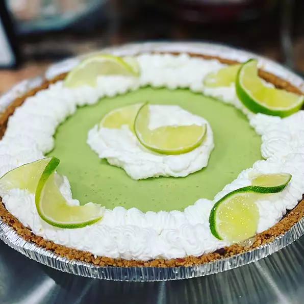

Key Lime Pie

Just like pizza this key lime pie can cure any sadness to come your way!
Ingredients
- 5 egg yolks, beaten
- 1 (14 ounce) can sweetened condensed milk
- ½ cup key lime juice
- 1 (9 inch) prepared graham cracker crust
Directions
- Preheat the oven to 375 degrees F (190 degrees C).
- Combine sweetened condensed milk, key lime juice, and egg yolks in a large bowl; mix well. Pour into unbaked graham cracker crust.
- Bake in the preheated oven until filling is set, about 15 minutes. Allow to cool completely before slicing.
Return to homepage!